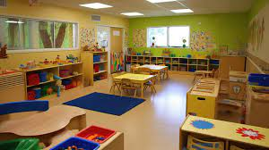

Ampere
ผู้จัดทำ: นายทินภัทร ต่อพิทักษ์พงศ์ นักเรียนชั้นมัธยมศึกษาปีที่ 5 โรงเรียนขุขันธ์ ห้องเรียนพิเศษ SMTE
เนื้อหาการเรียน
บทเรียนอนุบาล
“การศึกษาระดับปฐมวัยหรืออนุบาลถือเป็นแหล่งที่สำคัญของการเรียนรู้ตลอดชีวิตเพราะเป็นช่วงวัยที่เด็กมีพัฒนาการอย่างรวดเร็วด้านร่างกายจิตใจ สังคม และคำแนะนำในการพิจารณาหรือรูปแบบการปกครองเด็กในช่วงวัยนี้จึงมีความสำคัญมากขึ้นในบทความนี้ไปจนถึงสำรวจข้อมูลและเนื้อหาการเรียนรู้ของระดับอนุบาลเพื่อเรียนรู้ว่าการเรียนรู้ในช่วงวัยแรกเริ่มนี้ในเซสชั่น”

อนุบาล